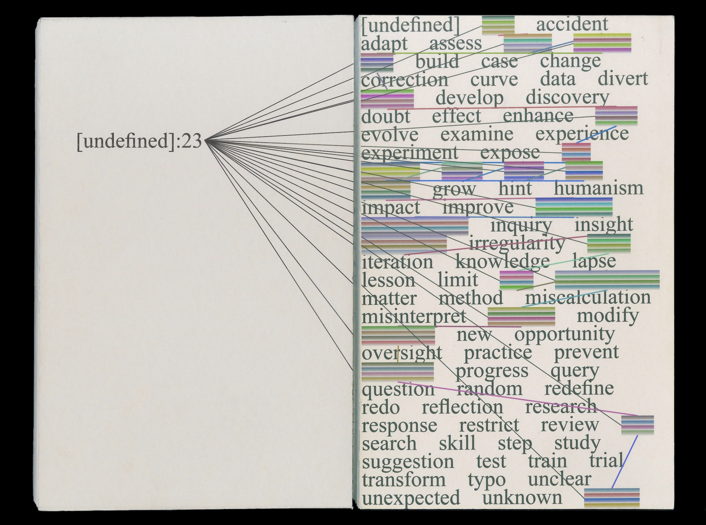

[undefined]: a book made through code
(indesign scripting) (book design)
(computational design)
(computational design)
In → Fall 2024
Under → Joe Marianek & Dinah Fried
7.5 x 12.25 inchesUnder → Joe Marianek & Dinah Fried
In an age where AI tools are used to minimize our errors yet can result in a dangerous rabbit hole of new errors, [undefined] is an 80-page book designed almost entirely through code. It is meant to redefine the role of error in learning and innovation, challenging its traditional perception as something to be avoided. Through this project, I forced myself to learn an unfamiliar technological tool (Indesign scripting using basil.js) without relying on any AI to fix my mistakes but instead allowing digital errors to experiment and push boundaries in creating something physical. Each time the code is run, a different iteration of the book is produced!
